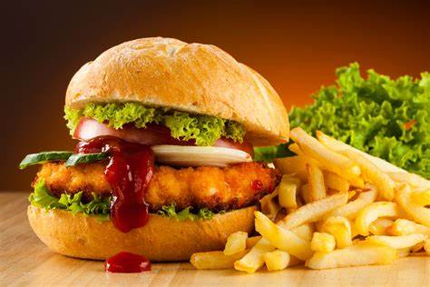

INDIAN FOODS
The staple Indian foods are Rice, Wheat and Lentils. And no Indian dish is complete without spices. Indian food is a combination of all six tastes like sweet, sour, salty, bitter, spicy and astringent.

CHINESE
Chinese food is one of the healthiest in the world. ... .You never eat the same dish twice in China! . There are eight culinary cuisines in China. ... Noodles, rice and soup are staples. ... Traditional Chinese food is almost completely dairy-free. ... More items

FAST FOODS
Cheeseburger, soft drink, french fries, pizza margherita, hot dog, fried chicken, submarine sandwich, and donuts. Fast food is a type of mass-produced food designed for commercial resale, with a strong priority placed on speed of service.